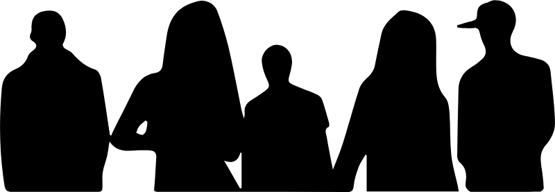

Grote Broer Grote Zus
Waar wil je naartoe?
Twee aparte portalen, elk met een eigen inlog.
Portaal
Straatrondes
Verslagen, rondes en de wijk.
Openen
Portaal
Medewerkersportaal
Voor medewerkers van GBGZ.
Openen

Probeert u op de site te komen van Grote Broer Grote Zus? Klik dan hier:
gbgz-breda.nl